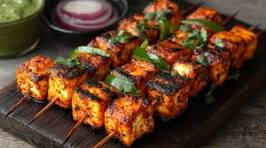

Paneer Tikka

Paneer Tikka is a popular Indian appetizer where chunks of paneer are
marinated in spiced yogurt and grilled or roasted until smoky and charred.
Ingredients:
- Paneer cubes
- Thick curd (yogurt)
- Ginger garlic paste
- Red chili powder, turmeric, garam masala
- Chaat masala
- Capsicum and onion cubes
- Salt
- Oil
Instructions:
-
Mix curd with spices, salt, and ginger garlic paste to make a marinade.
-
Coat paneer, onions, and capsicum in the marinade. Rest for at least 30
mins.
- Skewer and grill or pan-roast until charred and cooked.
- Sprinkle with chaat masala and serve hot with mint chutney.